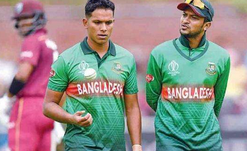
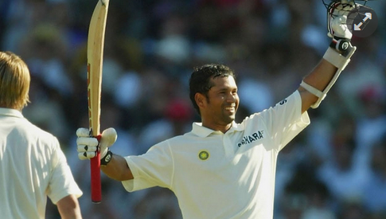

| All series has been postponed due to covid 19 pandemic.Stay tuned for further updates Server will be refresh everyday between 20:00-00:00Stay at Home |

|
West Indies tour of EnglandJul 08-Jul 12
1st testThe rose bowl,Southampton4:00 pm Click to see match preview |
Pakistan tour of EnglandAug 29,Sat
1st T20Headingly,Leeds10:00 pm Click to see match preview |
Ireland tour of EnglandSep 10,Thu
1st ODITrent Brigde,Nottingham5:30 pm Click to see match preview |
West Indies tour of AustraliaOct 04-Oct 09 Click to see match preview |
|
|
| Corona Update |
| Injured:11,229,399 |
| Deaths:529,878 |
| Recovered:6,372,589 |
| Series | Date | Live Score |
|---|---|---|
| West Indies tour of England,2020 | Jul 08-Jul 28 | |
| New Zealand tour of West Indies,2020 | Jul 08-Jul 19 | Postponed |
| Pakistan tour of England,2020 | Aug 05-Sep 02 | Available on match day |
| Zimbabwe tour of Australia,2020 | Aug 09-Aug 15 | postponed |
| Ireland tour of England,2020 | Sep 10-Sep 15 | Available on match day |
| West Indies tour of Australia,2020 | Oct 04-Oct 09 | Available on match day |
| India tour of Australia,2020-21 | Oct 11-Jan 17 | Available on match day |
| ICC men T20 World cup,2020 | Oct 18- Nov 15 | Available on match day |
| Afghanistan tour of Australia,2020 | Nov 21-Nov 25 | Available on match day |
| New Zealand tour of Australia,2021 | Jan 26-Feb 02 | Available on match day |
| Bd cricket News |
 সাকিবকে সাইফউদ্দিনের চ্যালেঞ্জ.... বিস্তারিত জানতে লিংকে প্রবেশ করুন…
 টেস্টে শতাব্দী-সেরাদের মধ্যে ৩৮ নম্বরে টেন্ডুলকার..বিস্তারিত লিংকে....